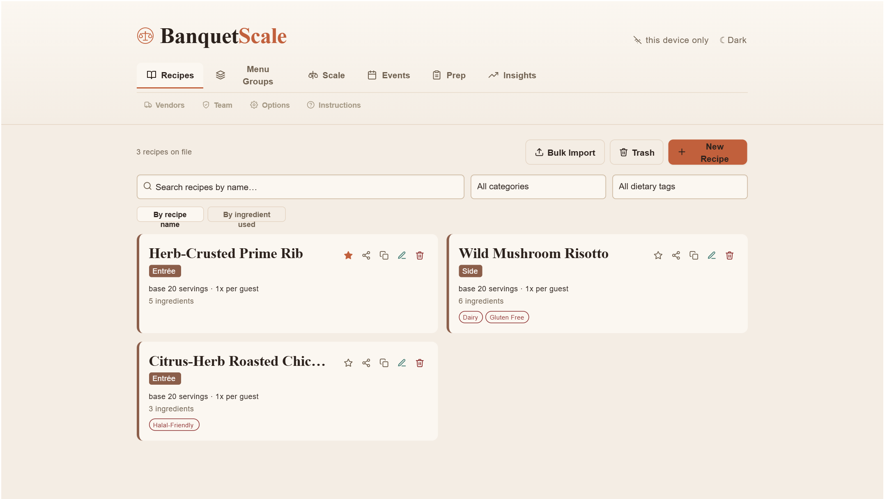
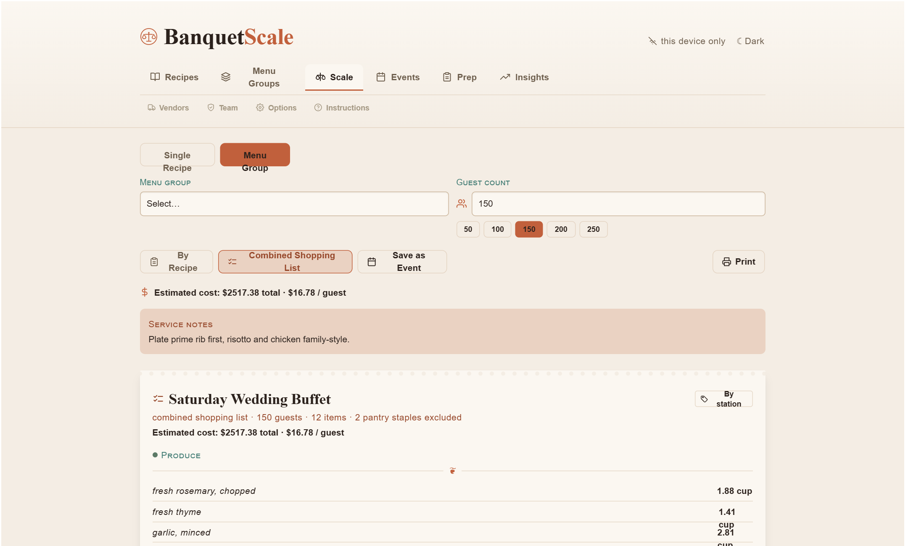

Most catering software manages bookings, staffing, and invoicing, then still hands you a spreadsheet when it's time to actually scale a recipe. BanquetScale is built for that one job, and it goes deeper than a scaling calculator once you're actually in a kitchen using it.
Landing pages tend to describe software in the vaguest possible terms. Here's what's really in the app, tab by tab, tap to open any section.
Two fast ways to build your recipe book. Paste & Parse takes ingredient lines copied straight from an old recipe card, something like "5 lb beef chuck," and splits each one into name, amount, and unit automatically. Bulk Import goes further: paste several full recipes at once using a simple text format (name, category, servings, then a list of ingredients) so a whole binder of house recipes can go in during one sitting instead of one screen at a time.
Every ingredient carries real prep logic, not just a quantity. Set a "round up to nearest" rule so a scaled amount always lands on something you'd actually buy, whole cases, whole pans, instead of a raw decimal. Give it a custom label so the prep sheet reads "case (5 lb)" instead of just "lb." Tag it to a prep station (Protein, Produce, Dairy, Pantry, and so on), which is what makes the station sorted prep sheets and shopping lists possible later. Add a cost per unit if you track food cost, or skip it entirely if you don't.
Base servings versus servings per guest. Base servings is how many people the recipe as written feeds. Servings per guest is how many portions one guest actually eats, usually 1, but a buffet side people tend to double up on can be set to 1.5, and that adjustment carries through every future scale.
Nothing is ever really gone by accident. Delete a recipe and it sits in a 30 day trash instead of vanishing, so a mistake is recoverable. Search can flip between recipe name and ingredient, which matters the moment a delivery falls through and you need to know instantly which dishes on tonight's menu use shrimp.
Pick a single recipe or a full menu group, enter a guest count, and every ingredient recalculates using each recipe's own rounding rules at once. Servings per guest can be nudged for one dish right on the ticket itself, without touching the underlying recipe, useful when this particular crowd is clearly going to go back for seconds on the pasta.
A warning banner appears if a recipe is being pushed to an extreme multiplier of its base size, either direction, which is your signal to sanity check the numbers before committing to a shopping trip based on them.
For a full menu group, switch to the Combined Shopping List and every ingredient across every dish gets added together and sorted by station, so nobody is shopping the buffet one recipe at a time. Print gives a clean black and white version for the kitchen, no app background, no clutter, just ingredients and method. Save as Event locks in this exact guest count and every adjustment so it can be reloaded precisely later.
This is the part most recipe scalers don't have at all. Pick a saved event and the app builds a day by day checklist automatically, counting backward from the event date. Every recipe carries its own lead time, same day, one day ahead, and so on, set once in the recipe editor, and the timeline sorts each dish into the correct prep day on its own without you doing that math by hand every single time.
An ordering day gets built straight from the combined shopping list, with its own adjustable lead time separate from the prep days. Every checkbox on the timeline is saved as you go, and if sync is turned on, checking something off on one device shows it checked for the whole team on theirs too. It prints clean enough to tape to a wall.
An event is a saved snapshot of a scaled recipe or menu group: the guest count, every adjustment, and, once you fill it in afterward, how it actually went. Log Results after service captures a one to five star rating, a waste or leftover note, and optional revenue per dish.
Insights turns that logged history into something you can actually use: which dishes get booked most often, which are rated highest, an estimated profitability comparing logged revenue against ingredient cost, and a running waste log across every event you've recorded. It's honest about how much data backs each number too. A dish rated after one event is shown differently than one rated after ten, so you're never trusting a trend that isn't really there yet.
Sync is entirely optional and off by default. Recipes live only in your browser until you choose to turn it on, and turning it on means connecting your own free Firebase project, not a server BanquetScale runs, so your kitchen's data never sits on infrastructure someone else controls.
Once connected, the first person to sign up becomes admin automatically. Everyone after that needs approval, or an admin can invite someone by email ahead of time so they skip the waiting queue entirely and land straight in with the role you picked. Three roles: admin has full control and manages the team, editor can add and change recipes, groups, and events, viewer can browse, scale, and print but can't change anything, which is exactly the access a line cook usually needs and nothing more.
Cook Mode gives any scaled recipe a large text, distraction free view with checkable ingredients and steps, and keeps the screen from sleeping where the browser supports it, so a phone propped on a shelf stays lit through the whole prep.
Pantry staples. Mark an ingredient as a staple in the recipe editor and it's automatically left off combined shopping lists, since nobody needs "salt" printed on a supplier order.
Step level timers. Set a timer length on a method step and a tappable countdown appears everywhere that step shows up, on the recipe, on the ticket, in Cook Mode.
Vendors & suppliers. Keep a simple contact list in Options, then assign a vendor to any ingredient to group a shopping list by supplier instead of by station, useful the moment you're placing three separate orders instead of walking one list around a kitchen.
Favorites, photos, backups. Star a recipe or menu group to float it to the top of its list. Photos attached to a recipe are resized automatically before saving so they stay small even synced across devices. And a full backup of every recipe, group, and event can be exported to a JSON file at any time from Options, independent of whether sync is turned on.
Real screens from the current build, terracotta palette, dark mode toggle and all.

Recipe library
Category and dietary tags at a glance, search by name or ingredient.

Combined shopping list
A full menu group scaled to 150 guests, sorted by station, with cost per guest.
BanquetScale is brand new. There's no roster of customer logos to put here yet, and I'd rather leave this section honest than fill it with quotes nobody said.
I built it because every catering platform I looked at treated recipe scaling as an afterthought: a spreadsheet bolted onto a booking system. This tool does that one job properly. If you're an early user and it saves your kitchen real time, I'd genuinely like to hear about it, and with your permission, put your name here.
Bryan, BanquetScale founder